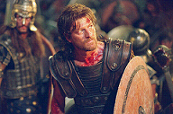

Forums galactiques > Taverne galactique : lieu de discussion informel > Je Cherche une Coalition
Pages : 1
| Ulysse  28/02 ETU 18:53 | Je suis Ulysse je cherche une coalition actif qui veut la paix tout en ce battant, je suis un jeune commandant et je suis pour l'instant neutre, donc je cherche une coalition pour suivre leur voie ! |
Largo 28/02 ETU 19:06 | Dans la Galaxie, il existe plusieurs coalitions dont les principales sont: - l'AST (voir Alphonse Hubert) - les Ultrèmes (je ne sais pas qui est leur chef mais Seigneur Vador pourra vous renseigner) - le PPG (voir Imothep) - les Hydropates (voir Largo, moi quoi) - l'UGC (voir Rudzain) - l'ULG (voir Commandant Kerstan) Si j'ai oublié certaines coalitions, veuillez m'excuser et je vous prie de compléter cette liste. |
Palpatou 28/02 ETU 19:09 | Ha les Ultremes sont rares(espece eteinte), ils savent que ce battre |
Largo28/02 ETU 19:12 | C'est tout de même une coalition de la Galaxie. Il faut donc en parler. Même si je ne partage pas leurs idées. |
Ulysse28/02 ETU 19:13 | Mouai, bref c'est une coalition à evité? |
gOlstein 28/02 ETU 19:13 | Ulysse n'écoutez pas leurs mensonges. Les Ultrèmes sont la force dominante de la galaxie. Les premiers au classement sont Ultrèmes. Je suis moi même le premier du jeu, suivi de notre grand chef militaire Napoléon et de notre guide l'Abbé Ramouflon. Nous sommes tout sauf faibles. L'Empire Galactique Ultrémiste est l'organisation la plus riche de la galaxie (plusieurs centaines de milliers de milliards). Les Ultrèmes se battent pour la Liberté. Notre chef est l'Impératrice Ta Princesse. C'est à elle qu'il faut s'addresser pour rejoindre notre coalition. Mais tu peux également voir avec Napoléon. |
Ulysse28/02 ETU 19:15 | Bah je recherche pas la puissance ! |
ERLORAK 28/02 ETU 19:17  | Vous accepter n'importe qui, gOlstein? N'y a-t-il pas de tests, une puissance minimale à avoir? |
Palpatou28/02 ETU 19:18 | Bah au point ou les Ultremes en sont! |
gOlstein28/02 ETU 19:22 | Vous sous entendez qu'Ulysse est n'importe qui ? Nous cherchons le salut de leurs âmes. Nous leur offrons notre aide. |
Ulysse28/02 ETU 19:25 | Bon..... moi je suis la pour trouvez une coalition donc si quelqu'un est intéressez me contactez par MP |
l\'abbé ramouflon 28/02 ETU 19:25 | nous nous contresurtorchons ultrextermement de l'avis des dégénérés tels que vous . L'ultremisme est LA voie, elle se passe de vos commentaires et se paye le luxe de pouvoir choisir ses membres en fonction de leur ultremitude contrairement aux ammas de faiblards associés que sont les autres coalitions . |
Seigneur vador 28/02 ETU 19:26 | Au point ou les ultremes en sont????MAis pauvre idiots combien d'ultremes sont tombés sous vos coups???Et combien d'ASTiens sont tombés sous NOS coups????VOus n'avez que des petits a part une dizaines de puissants votre seule maigre résistance provient de l'argent de Macpolar et de tactiques sournoises et laches comme mettre le point 1 du 0 en vacances... |
ERLORAK28/02 ETU 20:22 | "L'ultremisme est LA voie, elle se passe de vos commentaires " Et après vous prôner l'ouverture d'esprit.... |
Seigneur vador28/02 ETU 20:33 | Correction nous pronons l'ouverture d'esprit pour ceux qui sont dignes la recevoir,en général porter l'insigne AST est un poids dur a supporter,mais qui sait...peut etre allez vous ouvrir les yeux et vous rendre compte que seul l'ultremisme peut ammener la paix dans la galaxie... |
ERLORAK28/02 ETU 20:37 | Ha maintenant c'est la paix que vous prôner! Il faudrait savoir! Avant c'était la liberté indivudelle acquise uniquement dans le chaos (qui est opposé à la paix). Peut-être que vous devriez avoir un rendez-vous avec l'abbé pour une scéance d'endocrinement. |
Seigneur vador28/02 ETU 20:38 | On obtient la paix en faisant un peu de chaos pour secouer les mauviettes et leur montrer la voie...Mais peut etre est-ce trop compliqué pour vous... Ou alors n'avez vous pas compris que nous voulons la paix SAUF avec l'AST?????? |
ERLORAK28/02 ETU 20:39 | "un peu de chaos"? Il me semblait que l'ultrématie était bien plus que ça... |
Seigneur vador28/02 ETU 20:39 | C'est un euphémisme bien sur... |
kratos 28/02 ETU 21:23 | vous avez vos métode nous on a les notres |
Pages : 1
Forums galactiques > Taverne galactique : lieu de discussion informel > Je Cherche une Coalition